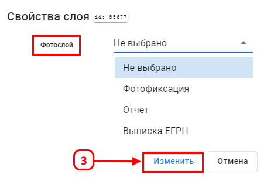
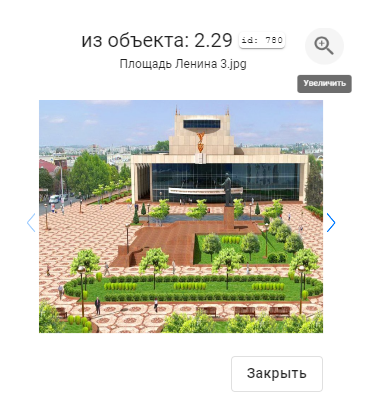

Фотослой предназначен для просмотра результатов фотофиксации при проколе или выделении, одного или множества объектов..
Для активации функции «Фотослой», перейдите в свойства слоя (2).
Настройте свойства слоя и в последнем пункте «Фотослой» выберите поле, в котором содержатся данные о фотофиксации, нажмите «Изменить» (3).

При проколе объектов на карте отображаются сначала объекты фотофиксации.
